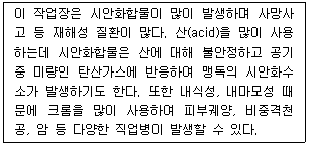
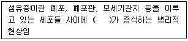
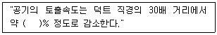

산업위생관리산업기사 (2011-08-21 기출문제)
1과목: 산업위생학 개론
1. 다음 중 노동의 적응과 장애에 대한 설명으로 틀린 것은?
- 환경에 대한 인체의 적응에는 한도가 있으며 이러한 한도를 허용기준 또는 노출기준이라 한다.
- 작업에 따라서 신체 형태와 기능에 국소적 변화가 일어나는 경우가 있는데 이것을 직업성변이라고 한다.
- 외부의 환경변화와 신체활동이 반복되거나 오래 계속되어 조절기능이 숙련된 상태를 순화라고 한다.
- 인체에 어떠한 자극이건 간에 체내의 호르몬계를 중심으로 한 특유의 반응이 일어나는 것을 적응증상군(適應症狀群)이라 하며 이러한 상태를 스트레스라고 한다.
(정답률: 64%)

2. 다음 중 산업피로 발생의 생리적인 원인이라고 볼 수 없는 것은?
- 신체조절기능의 저하
- 체내 노폐물의 감소
- 체내에서 물리화학적 변조
- 산소를 포함한 근육 내 에너지원의 부족
(정답률: 68%)
3. 다음 중 노출기준(TLV)의 적용상 주의사항으로 적절하지 않은 것은?
- 반드시 산업위생전문가에 의하여 적용되어야 한다.
- 독성의 강도를 비교할 수 있는 지료로 사용된다.
- 대기오염 평가 및 관리에 적용할 수 없다.
- 기존의 질병이나 육체적 조건을 판단하기 위한 척도로 사용될 수 없다.
(정답률: 75%)
4. 다음 설명에 해당하는 작업장으로 가장 적절한 것은?

- 도금
- 도장
- 주조
- 크롬용접
(정답률: 52%)
5. 다음 중 "모든 물질은 독성을 가지고 있으며, 중독을 유발하는 것은 용량(dose)에 의존한다."고 말한 사람은?
- Galen
- Paracelsus
- Agricola
- Hippocrates
(정답률: 69%)
6. 다음 중 근육노동에 있어서 특히 보급해야 할 비타민의 종류는?
- 비타민 A
- 비타민 B1
- 비타민 B7
- 비타민 D
(정답률: 88%)
7. 다음 중 오염물질에 의한 직업병의 예방대책과 가장 거리가 먼 것은?
- 관련 보호구 착용
- 관련 물질의 대체
- 정기적인 신체검사
- 정기적인 예방접종
(정답률: 68%)
8. 다음 중 산업안전보건법상 제조업의 경우 상시 근로자가 몇 명 이상인 경우 보건관리자를 선임하여야 하는가?
- 5명
- 50명
- 100명
- 300명
(정답률: 89%)
9. 다음 중 산업안전보건법상 특수건강진단 대상 작업에 해당하지 않는 것은?
- 소음ㆍ진동작업
- 방사선 작업
- 고온 및 저온작업
- 유해광선 작업
(정답률: 55%)
10. 다음 중 중량물 취급 작업에 있어 미국국립산업안전보건연구원(NIOSH)에서 제시한 감시기준(Action Limit)의 계산에 적용되는 요인이 아닌 것은?
- 물체의 이동거리
- 대상 물체의 수평거리
- 중량물 취급 작업의 빈도
- 중량물 취급 작업자의 체중
(정답률: 80%)
11. 실내공기오염물질 중 가스상 오염물질에 해당하지않는 것은?
- 질소산화물
- 포름알데히드
- 알레르겐
- 오존
(정답률: 53%)
12. 다음 중 경견완 장애가 발생하기 가장 쉬운 작업은?
- 커피 시음
- 전산 데이터 입력
- 잠수 작업
- 음식 배달
(정답률: 76%)
13. 다음 중 작업강도에 관한 설명으로 틀린 것은?
- 일반적으로 열량소비량을 기준으로 한다.
- 하루의 총 작업시간을 통한 평균 작업대사량으로 표현한다.
- 작업강도를 분류할 경우에 실동률을 이용하기도 한다.
- 기초대사량은 개인에 따라 차이기 크므로 고려되지 않는다.
(정답률: 82%)
14. 육체적 작업능력이 16kcal/min인 근로자가 1일 8시간동안 물체를 운반하고 있다. 이때의 작업대사량이 7kcal/min라고 할 때 이 사람이 쉬지 않고 계속하여 일할 수 있는 최대 허용시간은 약 얼마인가? (단, 16kcal/min에 대한 작업시간은 4분이다.)
- 145분
- 188분
- 227분
- 245분
(정답률: 53%)
15. 다음 중 충격소음이라 함은 "최대음압수준에 얼마 이상인 소음이 1초 이상의 간격으로 발생하는 것"을 말하는가?
- 90dB(A)
- 100dB(A)
- 120dB(A)
- 140dB(A)
(정답률: 76%)
16. 작업환경측정 및 정도관리규정상 1일 작업시간이 8시간을 초과하는 경우 노출기준을 비교, 평가할 수 있는 보정노출기준을 정하는 공식으로 옳은 것은? (단, T는 노출시간/일, H 는 작업시간/주를 말한다.)
- 급성중독 물질인 경우 보정노출기준(1일간 기준) = 8시간노출기준 × 8/T
- 급성중독 물질인 경우 보정노출기준(1일간 기준) = 8시간노출기준 × T/8
- 만성중독 물질인 경우 보정노출기준(1일간 기준) = 8시간노출기준 × 40/T
- 만성중독 물질인 경우 보정노출기준(1주간 기준) = 8시간노출기준 × H/40
(정답률: 68%)
17. 다음 중 산업위생관리의 목적에 대한 설명과 가장 거리가 먼 것은?
- 작업환경 개선 및 직업병의 근원적 예방
- 작업성 질병 및 재해성 질병의 판정과 보상
- 작업환경 및 작업조건의 인간공학적 개선
- 작업자의 건강보호 및 생산성의 향상
(정답률: 89%)
18. 권장무게한계가 3.1kg이고, 물체의 무게가 9kg일 때 중량물 취급지수는 약 얼마인가?
- 1.91
- 2.72
- 2.90
- 3.31
(정답률: 87%)
19. 다음 중 산업피로의 예방과 대책으로 적절하지 않은 것은?
- 충분한 수면을 취한다.
- 작업환경을 정리·정돈한다.
- 너무 정적인 작업은 동적인 작업으로 전환한다.
- 휴식은 한 번에 장시간 동안 하는 것이 바람직하다.
(정답률: 86%)
20. 다음 중 미국산업위생학회(AIHA)에서 정의한 산업위생의 정의를 가장 올바르게 설명한 것은?
- 모든 직업인의 육체적 건강을 예방하고 치료하는 학문이다.
- 작업장의 환경을 보다 쾌적하게 조성하여 작업에 종사하는 근로자들이 안전하게 작업하도록 하며, 이로 인하여 궁극적으로 생산성을 향상시키는데 필요한 지식을 제공하는 과학이다.
- 근로자나 일반 대중에게 질병, 건강장애와 안녕방해, 또는 심각한 불쾌감과 비능률을 초래하는 작업환경요인 또는 스트레스를 예측, 인지, 측정, 평가 및 관리하는 과학이며 기술이다.
- 근로자의 질병을 효율적으로 관리하며 적절한 치료를 통해 업무에 빨리 복귀시키는데 적절한 자료를 제공하는 학문이다.
(정답률: 78%)
2과목: 작업환경측정 및 평가
21. 500mL 수용액 속에 2g의 NaOH가 함유되어 있는 용액의 pH는? (단, 완전해리 기준)
- 13.0
- 13.4
- 13.6
- 13.8
(정답률: 29%)
22. 활성탄관을 연결한 저유량 공기 시료채취펌프를 이용하여 벤젠증기(MW = 78g/mol)를 0.112m3 채취하였다. GC를 이용하여 분석한 결과 657㎍의 벤젠이 검출되었다면 벤젠증기의 농도(ppm)는? (단, 온도 25℃, 압력 760mmHg 이다.)
- 0.90
- 1.84
- 2.94
- 3.78
(정답률: 67%)
23. 태양광선이 내리쬐지 않는 옥외작업장에서 고온의 영향을 평가하기 위하여 아스만 통풍건습계 및 흑구온도계 등으로 측정한 결과 자연습구온도 20℃, 건구온도 25℃, 흑구온도가 20℃ 일 때 습구흑구온도지수 (WBGT)는?
- 20℃
- 22℃
- 24℃
- 26℃
(정답률: 74%)
24. 여과지의 공극보다 작은 입자가 여과지에 채취되는 기전은 여과이론으로 설명할 수 있는데 다음 중 펌프를 이용하여 공기를 흡인하고 시료를 채취할 때 크게 작용하는 기전으로 가장 거리가 먼 것은?
- 확산
- 간섭
- 중력침강
- 관성충돌
(정답률: 47%)
25. 입경이 18㎛이고 비중이 1.2인 먼지입자의 침강속도는? (단, 산업위생분야에서 사용하는 간편식 사용)
- 약 0.6cm/sec
- 약 1.2cm/sec
- 약 1.8cm/sec
- 약 2.1cm/sec
(정답률: 74%)
26. ACGIH 및 NIOSH에서 사용되는 자외선의 노출기준 단위는?
- J/nm
- mJ/cm2
- V/m2
- W/Å
(정답률: 42%)
27. 다음 유기용제 중 활성탄관을 사용하여 효과적으로 채취하기에 어려운 시료는?
- 방향족 아민류
- 할로겐과 탄화수소류
- 에스테르류
- 케톤류
(정답률: 53%)
28. 먼지 입경에 따른 여과 메카니즘 및 채취효율에 관한 설명으로 가장 거리가 먼 것은?
- 0.3㎛인 먼지가 가장 낮은 채취효율을 가진다.
- 관성충돌은 1㎛ 이상인 입자에서 공기의 면속도가 수 cm/sec 이상일 때 중요한 역할을 한다.
- 입자크기는 차단, 관성충돌 등의 메카니즘에 영향을 미치는 중요한 요소이다.
- 0.1㎛ 미만인 입자는 주로 간섭에 의하여 채취된다.
(정답률: 57%)
29. 누적소음노출량 측정기를 사용하여 소음을 측정코자 할 때 우리나라 기준에 맞는 Criteria 및 Exchange rate는? (단, A특성 보정)
- 80dB, 5dB
- 80dB, 10dB
- 90dB, 5dB
- 90dB, 10dB
(정답률: 76%)
30. 100rpm을 %로 환산할 때 다음 중 어느 것과 같은가?
- 1.0%
- 0.1%
- 0.01%
- 0.001%
(정답률: 72%)
31. 산에 쉽게 용해되므로 입자상물질 중의 금속을 채취하여 원자흡광법으로 분석하는데 적당하며 유리섬유, 석면 등 현미경분석을 위한 시료채취에도 이용되는 막여과지는?
- Mixed cellulose ester membrane filter
- Poly vinylchloride membrane filter
- Glass fiber membrane filter
- Trillon membrane filter
(정답률: 79%)
32. 가스크로마토그래피로 물질을 분석할 때 분해능을 높이기 위한 조작으로 옳지 않은 것은?
- 분리관의 길이를 길게 한다.
- 고정상의 양을 다소 적게 한다.
- 고체 지지체의 입자크기를 크게 한다.
- 일반적으로 저온에서 좋은 분해능을 보이므로 온도를 낮춘다.
(정답률: 58%)
33. 시료채취방법에서 지역시료(area monitoring) 포집의 장점과 거리가 먼 것은?
- 특정 공정의 농도분포의 변화 및 환기장치의 효율성 변화 등을 알 수 있다.
- 측정결과를 통해서 근로자에게 노출되는 유해인자의 배경농도와 시간별 변화 등을 평가할 수 있다.
- 특정 공정의 계절별 농도변화 및 공정의 주기별 농도변화 등의 분석이 가능하다.
- 근로자 개인시료의 채취를 대신할 수 있다.
(정답률: 83%)
34. 원자흡광광도법에서 분석하려는 금속성분을 불꽃중에서 원자화시킬 경우, 불꽃을 만들기 위하여 일반적으로 가장 많이 사용되는 가연성가스와 조연성가스의 조합은?
- 수소 - 산소
- 이산화질소 - 공기
- 프로판 - 산소
- 아세틸렌 - 공기
(정답률: 48%)
35. 동일(유사)노출군을 가장 세분하여 분류하는 방법의 기준으로 가장 적합한 것은?
- 공정
- 작업범주
- 조직
- 업무
(정답률: 63%)
36. 직경이 5센티미터인 흑구온도계의 측정시간으로 적합한 기준은? (단, 고용노동부 고시 기준)
- 5분 이상
- 10분 이상
- 15분 이상
- 25분 이상
(정답률: 66%)
37. 어떤 유해작업장의 일산화탄소(CO)가 14.9ppm 이라면 이 공기 1Sm3중에 CO는 몇 mg 포함되어 있는가? (단, 조건은 0℃, 1기압 상태로 동일하다.)
- 10.8mg
- 12.5mg
- 15.3mg
- 18.6mg
(정답률: 24%)
38. 다음 중 작업환경측정에서 사용하는 2차 유량측정장치(2차표준)에 해당되지 않는 것은?
- 로타 미터(Rota meter)
- 오리피스 미터(Orifice meter)
- 폐활량계 미터(Spiro meter)
- 습식테스트 미터(Wet-test meter)
(정답률: 85%)
39. 어떤 분석방법의 검출한계가 0.2 mg 일 때 정량한계로 가장 적합한 것은?
- 0.30 mg
- 0.33 mg
- 0.66 mg
- 2.0 mg
(정답률: 78%)
40. 다음 중 일반적으로 사용하는 순간시료채취기(Grab sampling)가 아닌 것은?
- 버블러
- 진공 플라스크
- 시료채취 백
- 스테인레스 스틸 캐니스터
(정답률: 42%)
3과목: 작업환경관리
41. 자연 조명에 관한 설명으로 옳지 않은 것은?
- 유리창은 청결하여도 10~15% 정도 조도가 감소한다.
- 지상에서의 태양 조도는 약 100,000 Lux 정도이다.
- 균일한 조명을 요하는 작업실은 서남창이 좋다.
- 실내의 일정지점의 조도와 옥외 조도와의 비율을 주광율(%)이라 한다.
(정답률: 80%)
42. 감압병 예방 및 치료에 관한 설명으로 옳지 않은 것은?
- 감압병의 증상이 발생하였을 경우 환자를 원래의 고압환경으로 복귀시킨다.
- 고압 환경에서 작업할 때에는 질소를 아르곤으로 대치한 공기를 호흡시키는 것이 좋다.
- 잠수 및 감압방법에 익숙한 사람을 제외하고는 1분에 10m 정도씩 잠수하는 것이 좋다.
- 감압이 끝날 무렵에 순수한 산소를 흡입시키면 예방적 효과와 감압시간을 단축시킬 수 있다.
(정답률: 78%)
43. 전리방사선의 장애와 예방에 관한 설명으로 옳지 않은 것은?
- 방사선 노출 수준은 거리에 반비례하여 증가하므로 발생원과의 거리를 관리하여야 한다.
- 방사선의 측정은 Geiger Muller counter 등을 사용하여 측정한다.
- 개인 근로자의 피폭량은 pocket dosimeter, film badge 등을 이용하여 측정한다.
- 기준 초과의 가능성이 있는 경우에는 경보장치를 설치한다.
(정답률: 62%)
44. 근로자의 귀덮개(NRR=31)를 착용하고 있는 경우 미국 OSHA의 방법으로 계산한다면 차음효과는?
- 5dB
- 8dB
- 10dB
- 12dB
(정답률: 92%)
45. 다음은 진폐증의 대표적인 병리소견인 섬유증에 관한 설명이다. ( )안에 알맞은 것은?

- 실리카 섬유
- 유리 섬유
- 콜라겐 섬유
- 에멀션 섬유
(정답률: 61%)
46. 고압환경에서의 2차적인 가압현상(화학적 장해)에 관한 설명으로 옳지 않은 것은?
- 산소중독 증상은 고압 산소에 의한 노출이 중지된 후에도 상당 기간 지속되어 비가역적인 증세를 유발한다.
- 산소의 분압이 2기압이 넘으면 산소중독증세가 나타난다.
- 공기 중의 질소 가스는 3기압 하에서는 자극작용을 한다.
- 이산화탄소 농도의 증가는 산소의 독성과 질소의 마취작용 그리고 감압증의 발생을 촉진시킨다.
(정답률: 45%)
47. 공기 중 오염물질을 분류함에 있어 상온, 상압에서 액체 또는 고체(임계온도가 25℃ 이상)물질이 증기압에 따라 휘발 또는 승화하여 기체상태로 된 것을 무엇이라고 하는가?
- 흄
- 증기
- 미스트
- 더스트
(정답률: 84%)
48. 작업장에서 방음대책을 음원대책과 전파경로대책으로 분류할 때 다음 중 음원대책으로 가장 거리가 먼것은?
- 지향성 변환
- 소음기 설치
- 발생원의 마찰력 감소
- 벽체로 음원 밀폐
(정답률: 38%)
49. 작업환경에서 발생되는 유해요인을 감소시키기 위한 공학적 대책과 가장 거리가 먼 것은?
- 유해성이 적은 물질로 대치
- 개인 보호 장구의 착용
- 유해 물질과 근로자 사이에 장벽 설치
- 국소 및 전체 환기 시설 설치
(정답률: 79%)
50. 용접작업시 발생하는 가스에 관한 설명으로 옳지 않은 것은?
- 강한 자외선에 의해 산소가 분해되면서 오존이 형성된다.
- 아크 전압이 낮은 경우 불완전 연소로 이황화탄소가 발생한다.
- 이산화탄소 용접에서 이산화탄소가 일산화탄소로 환원된다.
- 포스겐은 TCE로 세정된 철강재 용접 시에 발생한다.
(정답률: 60%)
51. 자외선에 대한 생물학적 작용 중 옳지 않은 것은?
- 피부 홍반형성과 색소 침착
- 대장공 백내장
- 전광성(전기성) 안염
- 피부의 비후와 피부암
(정답률: 53%)
52. 공장내부에 소음을 발생시키는 기계가 존재하는데, PWL=80dB인 기계 4대, PWL=85dB인 기계 2대가 동시에 가동할 때 PWL의 합은?
- 82dB
- 85dB
- 87dB
- 90dB
(정답률: 65%)
53. 방진재인 공기스프링에 관한 설명으로 옳지 않은 것은?
- 사용진폭이 큰 것이 많아 별도의 댐퍼가 불필요한 경우가 많다.
- 구조가 복잡하고 시설비가 많다.
- 자동제어가 가능하다.
- 하중의 변화에 따라 고유진동수를 일정하게 유지할 수 있다.
(정답률: 74%)
54. 고열 장애인 열경련에 관한 설명으로 가장 거리가 먼 것은?
- 보다 빠른 회복을 위해 수액으로 수분과 염분을 공급해서는 안된다.
- 일반적으로 더운 환경에서 고된 육체적 작업을 하면서 땀으로 흘린 염분 손실을 충당하지 못할 때 발생한다.
- 통증을 수반하는 경련은 주로 작업시 사용한 근육에서 흔히 발생한다.
- 염분의 공급 시에 식염정제가 사용되어서는 안된다.
(정답률: 67%)
55. 자외선 중 일명 화학적인 자외선이라 불리며, 안전과 보건 측면에 관심이 되는 자외선의 파장 범위로 가장 적합한 것은?
- 400~515 nm
- 300~415 nm
- 200~315 nm
- 100~215 nm
(정답률: 84%)
56. 광원으로부터 나오는 빛의 세기인 광도(luminous intensity)의 단위로 적합한 것은?
- lumen
- Lux
- candela
- footlambert
(정답률: 64%)
57. 고온환경에서 육체노동에 종사할 때 일어나기 쉬우며 말초 혈관 확장에 따른 요구 증대만큼의 혈관운동 조절이나 심박출력의 증대가 없을 때 또는 탈수로 말미암아 혈장량이 감소할 때 발생하는 고열장해의 종류로 가장 적합한 것은?
- 열피로
- 열경련
- 열사병
- 열성발진
(정답률: 59%)
58. 가로 15m, 세로 25m, 높이 3m인 어느 작업장의 음의 잔향 시간을 측정해보니 0.238 sec 였다. 이 작업장의 총흡음력(sound absorption)을 51.6% 증가시키면 잔향시간은 몇 sce가 되겠는가?
- 0.157
- 0.183
- 0.196
- 0.217
(정답률: 29%)
59. 전리방사선 중 입자방사선이 아닌 것은?
- 알파선
- 베타선
- 엑스선
- 중성자
(정답률: 70%)
60. 유기용제를 사용하는 도장작업의 관리방법에 관한 설명으로 옳지 않은 것은?
- 흡연 및 화기사용을 절대 금지시킨다.
- 작업장의 바닥을 청결하게 유지한다.
- 보호장갑은 유기용제 등의 오염물질에 대한 흡수성이 우수한 것을 사용한다.
- 옥외에서 스프레이 도장작업 시 유해가스용 방독마스크를 착용한다.
(정답률: 77%)
4과목: 산업환기
61. 다음 중 유해가스의 처리방법에 있어 연소에 의한 처리 방법의 장점이 아닌 것은?
- 폐열을 회수하여 이용할 수 있다.
- 시설투자비와 유지관리비가 적게 든다.
- 배기가스의 유량과 농도의 변화에 잘 적용할 수 있다.
- 가스연소장치의 설계 및 운전 조절을 통해 유해 가스를 거의 완전히 제거할 수 있다.
(정답률: 59%)
62. 다음 중 방사성 동위 원소나 독성가스를 취급하는 공정에서 가장 적합한 후드의 형식은?
- 건축부스형
- 캐노피형
- 슬롯형
- 장갑부착 상자형
(정답률: 32%)
63. 송풍기의 바로 앞부분(up stream)까지의 정압이 -200mmH2O, 뒷부분(down stream)에서의 정압이 10mmH2O 이다. 송풍기의 바로 앞부분과 뒷부분에서의 속도압이 모두 8mmH2O 일 때 송풍기 정압(mmH2O)은 얼마인가?
- 182
- 190
- 202
- 218
(정답률: 34%)
64. 다음 중 제어속도에 관한 설명으로 옳은 것은?
- 제어속도가 높을수록 경제적이다.
- 제어속도를 증가시키기 위해서 송풍기 용량의 증가는 불가피하다.
- 외부식 후드에서 후드와 작업지점과의 거리를 줄이면 제어속도가 증가한다.
- 유해물질을 실내의 공기 중으로 분산시키지 않고 후드내로 흡인하는데 필요한 최대기류속도를 말한다.
(정답률: 62%)
65. 다음 중 슬롯(slot)형 후드의 처리 유량이 60m3/min 이고 슬롯의 개구면적이 0.04m2 이라면 슬롯의 속도압(mmH2O)은 약 얼마인가?
- 18.2
- 25.3
- 38.2
- 43.3
(정답률: 41%)
66. 다음 중 국소배기시스템 설치시 고려사항으로 적절하지 않은 것은?
- 후드는 덕트보다 두꺼운 재질을 선택한다.
- 송풍기를 연결할 때에는 최소 덕트 직경의 3배 정도는 직선구간으로 하여야 한다.
- 가급적 원형 덕트를 사용한다.
- 곡관의 곡률반경은 최소 덕트 직경의 1.5 이상으로 하며, 주로 2.0을 사용한다.
(정답률: 74%)
67. 국소배기장치의 덕트를 설계하여 설치하고자 한다. 덕트는 직경 200mm의 직관 및 곡관을 사용하도록 하였다. 이때 마찰손실을 감소시키기 위하여 곡관 부위의 새우 곡관등은 몇 개 이상이 가장 적당한가?
- 2
- 3
- 4
- 5
(정답률: 66%)
68. 다음 중 동일 풍량, 동일 풍압에 비해 가장 소형이며, 제한된 장소에서 사용이 가능한 원심력 송풍기는?
- 평판 송풍기
- 다익 송풍기
- 터보 송풍기
- 프로펠러 송풍기
(정답률: 38%)
69. 다음 중 국소배기장치의 일반적인 배열순서로 가장 적합한 것은?
- 후드 → 송풍기 → 공기정화기 → 덕트
- 덕트 → 후드 → 송풍기 → 공기정화기
- 후드 → 덕트 → 공기정화기 → 송풍기
- 덕트 → 송풍기 → 공기정화기 → 후드
(정답률: 84%)
70. 가로 50cm, 세로 40cm인 개구면을 가진 포위식 후드의 제어속도가 0.5m/s이어야 한다면 이 때 필요송풍량(m3/min)은 약 얼마인가?
- 0.1
- 6
- 10
- 1000
(정답률: 38%)
71. 다음 중 레이놀드(Reynolds) 수를 구할 때 고려되어야 할 요소가 아닌 것은?
- 공기속도
- 덕트의 직경
- 공기밀도
- 유입계수
(정답률: 52%)
72. 플랜지가 부착된 슬롯형 후드의 필요송풍량은 플랜지가 없는 슬롯형 후드에 비하여 필요송풍량이 몇% 가 감소되는가? (단, 기타 조건의 변화는 없다.)
- 15%
- 30%
- 45%
- 50%
(정답률: 66%)
73. 다음 중 실내의 중량 절대습도가 80%, 외부의 중량 절대 습도가 60%, 실내의 수증기가 시간당 3kg 씩 발생할 때 수분 제거를 위하여 중량단위로 필요한 환기량(m3/min)은 약 얼마인가? (단, 공기의 비중량은 1.2kgf/m3으로 한다.)(오류 신고가 접수된 문제입니다. 반드시 정답과 해설을 확인하시기 바랍니다.)
- 0.21
- 4.17
- 7.52
- 12.50
(정답률: 31%)
74. 다음 중 국소배기장치에서 포촉점의 오염물질을 이송하기 위한 제어속도를 가장 크게 해야 하는 것은?
- 통조림작업, 컨베이어의 낙하구
- 액면에서 발생하는 가스, 증기, 흄
- 저속 컨베이어, 용접작업, 도금작업
- 연마작업, 블라스트 분사작업, 암석연마 작업
(정답률: 82%)
75. 기체의 비중은 공기무게에 대한 같은 부피의 기체 무게비이다. 이산화탄소의 기체비중은 얼마인가? (단, 1몰의 공기질량은 28.97g으로 한다.)
- 1.52
- 1.62
- 1.72
- 1.82
(정답률: 40%)
76. 다음의 토출기류에 대한 설명 중 ( ) 안에 알맞은 값은?

- 5
- 10
- 80
- 90
(정답률: 90%)
77. 국소배기장치가 효과적인 기능을 발휘하기 위해서는 후들 통해 배출되는 것과 같은 양의 공기가 외부로부터 보충되어야 한다. 이것을 무엇이라 하는가?
- 메이크업 에어(make up air)
- 충만실(pleum chamber)
- 테이크 오프(take off)
- 번 아웃(burn out)
(정답률: 91%)
78. 다음 중 전체환기시설을 설치하기 위한 조건으로 적절하지 않은 것은?
- 독성이 낮은 유해물질을 사용하고 있다.
- 공기 중 유해물질의 농도가 허용농도 이하로 낮다.
- 유해물질의 발생농도는 낮으나 총 발생량은 많다.
- 근로자의 작업위치가 유해물질 발생원으로부터 멀리 떨어져 있다.
(정답률: 69%)
79. 폭발방지를 위한 환기량은 해당 물질의 공기 중 농도를 어느 수준 이하로 감소시키는 것인가?
- 노출기준 하한치
- 폭발농도 하한치
- 노출기준 상한치
- 폭발농도 상한치
(정답률: 70%)
80. 후드가 직관덕트와 일직선으로 연결된 경우 후드정압의 측정지점은 일반적으로 덕트직경의 몇 배 떨어진 지점인가?
- 0.1 ~ 0.5배
- 0.5 ~ 1배
- 1 ~ 2배
- 2 ~ 4배
(정답률: 56%)
환경에 대한 인체의 적응에는 한도가 있으며 이러한 한도를 허용기준 또는 노출기준이라고 합니다. 즉, 인체는 일정한 범위 내에서만 환경에 적응할 수 있으며, 이를 넘어서면 건강에 해를 끼칠 수 있습니다.
작업에 따라서 신체 형태와 기능에 국소적 변화가 일어나는 것은 직업성 변화가 아니라 직업성 증후군이라고 합니다. 직업성 증후군은 특정 직업에서 일하는 사람들이 겪는 건강 문제로, 일의 특성에 따라 발생하는 것입니다.
외부의 환경변화와 신체활동이 반복되거나 오래 계속되어 조절기능이 숙련된 상태를 순화라고 하며, 인체에 어떠한 자극이건 간에 체내의 호르몬계를 중심으로 한 특유의 반응이 일어나는 것을 적응증상군(適應症狀群)이라 하며 이러한 상태를 스트레스라고 합니다.